Vendor management
Vendors represent a special category of customers that should be considered separately.
nopCommerce has tools for multi-vendor and drop shipping that enable you to sell online without having to keep stocks or ship orders. In this case, each product is assigned to a particular vendor whose details (including email address) are stored.
Whenever an order is placed, an email is sent to the vendor of each product in the order. The email includes the products, quantities, and more information if required. The vendor ships the item to the customer on behalf of the merchant, who typically pays each of their vendors at the end of the month.
Products from multiple independent vendors appear in the common product catalog, and your website visitors can shop at one web store even if your products are supplied by hundreds of vendors from all over the world.
Each vendor can be provided with administrator panel access to manage their products, review sales reports and order details regarding their products. Vendors can't see each other's activities.
The money goes to the merchant account of the store administrator, who then manually distributes funds among the vendors according to the order history, which is tracked and managed separately for each provider. In this manner, the customer only sees one charge from the main company.
The following procedure describes how to set up and provide a vendor record with access to the vendor portal site.
Set up a vendor account
Go to Customers → Vendors. The Vendors window will be displayed:
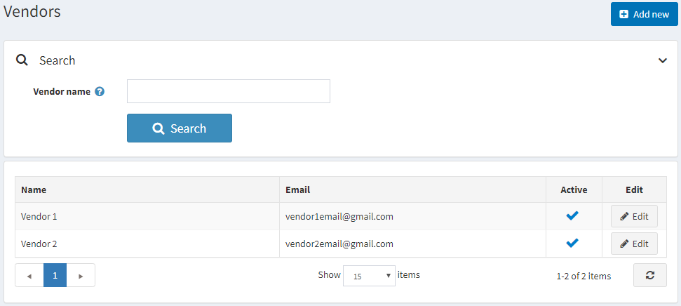
Click Add new.
Vendor info
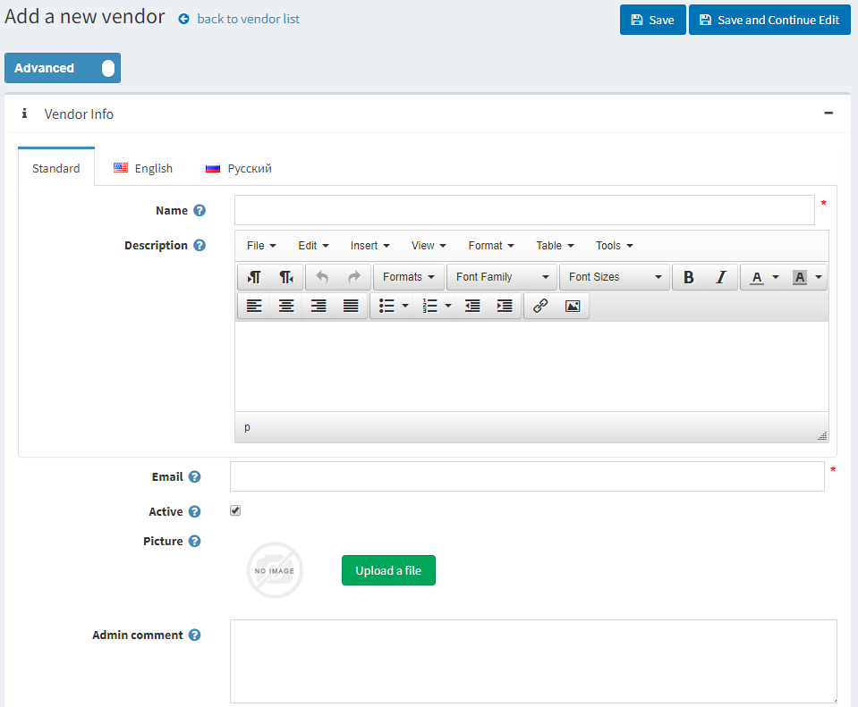
In the Vendor info panel, define the following vendor's details:
- Name of the vendor.
- Description for the vendor.
- Vendor's Email. "Order placed" notifications will be sent to this email.
- Select the Active checkbox to activate the vendor.
- Upload a vendor Picture.
- Admin comment — an optional comment or information for internal use.
Note
Some vendor message templates, such as OrderPaid.VendorNotification and OrderPlaced.VendorNotification, are disabled by default. See how to change this in the Message templates section.
Vendor attributes
When you create some additional vendor attributes, the Vendor attributes panel will be displayed as well.
A store owner is able to create attributes for a vendor, much like for a product. This would allow multi-vendor stores to collect and display more information about a vendor to customers.
Learn more about vendor attributes and how to create them in the Vendor attributes section below.
Address (optional)
In the Address (optional) panel, enter the vendor's address.
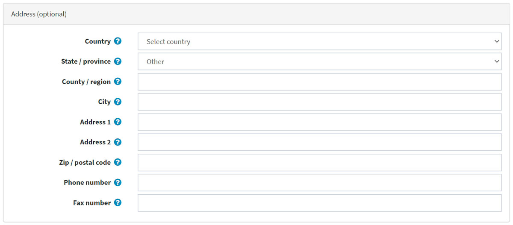
Display
In the Display panel, define the following display parameters:
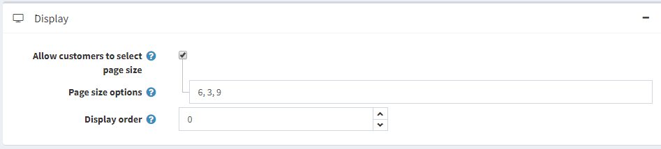
- Allow customers to select page size from a predefined list of options.
- If the previous checkbox is selected, define Page size options (comma-separated).
- If the previous checkbox is clear, enter the Page size.
- Display order of the vendor.
SEO
Refer to the SEO panels section in order to set up SEO.
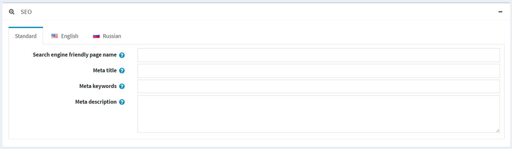
Assigning a vendor to a customer record
This step is optional and only required if you want your vendors to be able to log in to their administration portal and manage their products, orders and/or other data.
If you do not want vendors to have access to the admin area, ignore this step to allow the store owner to manage all vendor mappings.
Go to Customers → Customers. The Customers window will be displayed:
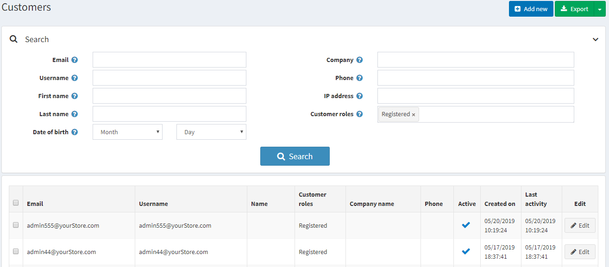
Create a new customer or click Edit beside a customer record you want to assign a vendor to. For more information about creating a customer, refer to Add a new customer.
In the Customer info panel, ensure the Vendors customer role is selected in the Customer roles field.
Note
A vendor customer account cannot belong to the default Administrators customer role.
In the Customer info panel, find the Manager of vendor field. Select the vendor record created previously.
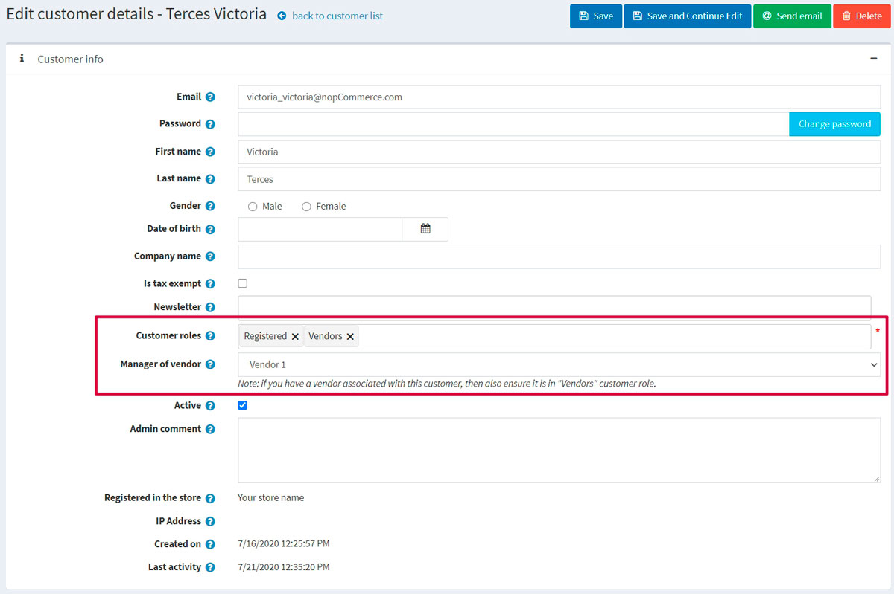
After the vendor's customer account is set up, the vendor can use this customer account to manage products, orders, shipments and view reports. The Administration link at the top of the public store will be displayed after logging in.
Vendor settings
This section describes how to define the vendor settings of your store. This includes the number of vendors to display, whether or not to show the vendor on the product details pages of the store, and more.
Go to Configuration → Settings → Vendor settings.
This page enables multi-store configuration; it means that the same settings can be defined for all stores or differ from store to store. If you want to manage settings for a certain store, choose its name from the multi-store configuration dropdown list and select all the checkboxes needed on the left to set custom values for them. For further details, refer to Multi-store.
Common
In the Common panel, define the following vendor settings: 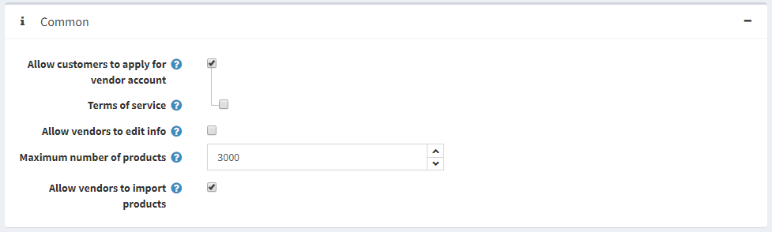
Allow customers to apply for vendor account. Firstly, a vendor request is filled by a user, thus creating a vendor account. Then, the request is presented to the store owner (via email notification) to be accepted.
Note
A store owner has to add an appropriate customer record to the "Vendors" role manually in order to grant access to the admin area. Read about it in the Assigning a vendor to a customer record section above.
- If the previous checkbox is selected, you can select Terms of service to require vendors to accept terms of service during registration.
Note
To edit these terms of service, go to Content management → Topics (pages). Find the VendorTermsOfService item and click Edit. Read more about it in the Topics (pages) section.
- If the previous checkbox is selected, you can select Terms of service to require vendors to accept terms of service during registration.
Allow vendors to edit info allows vendors to provide personal information in the public store.
- Choose whether to Notify about vendor information changes to notify the admin about vendor information changes.
Maximum number of products per vendor.
Allow vendors to import products allows vendors to import products.
Catalog
In the Catalog panel, define the following vendor settings: 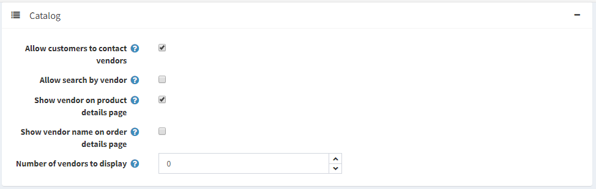
- Allow customers to contact vendors (send emails using contact forms). This functionality is available on a vendor details page in the public store.
- Allow search by vendor to customers on an advanced search page.
- Choose whether to Show vendor on product details page (if associated).
- Choose whether to Show vendor name on order details page (if associated).
- Number of vendors to display in the vendor navigation block in the public store.
Vendor attributes
You can create any number of vendor attributes, such as business name or website.
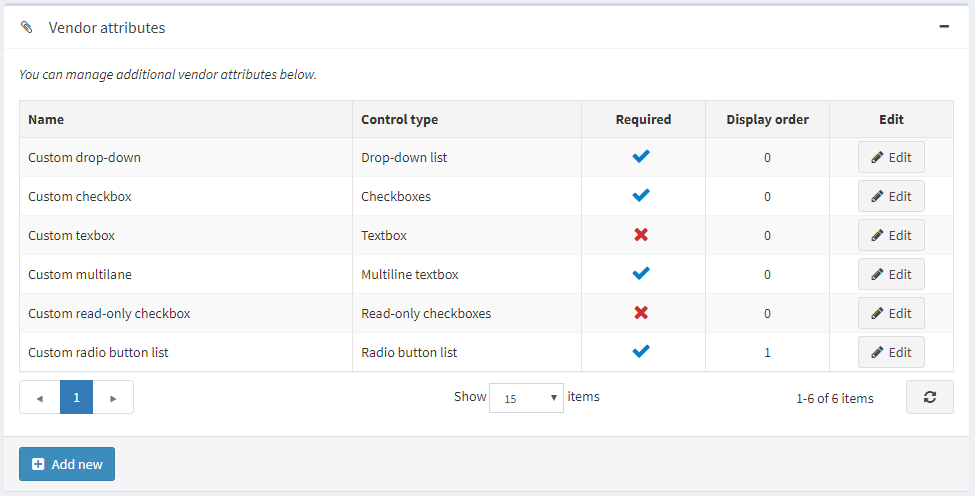
Add a new attribute
Click Add new to create a new vendor attribute and its values. The Add new vendor attribute window will be displayed as follows:
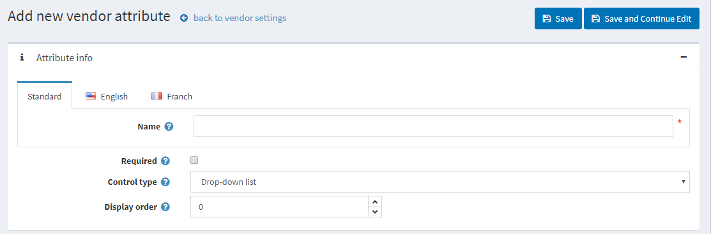
In the Attribute info panel, define the following information:
- Name — the name of the vendor attribute.
- Required — when an attribute is required, vendors must choose an appropriate attribute value before they can continue.
- From the Control type dropdown list, select the required method for displaying the attribute value: Drop-down list, Radio button list, Checkbox, Textbox, Multiline textbox, Read-only checkbox.
- Display order — the vendor attribute display order.
Note
Dropdown lists, radio lists, checkboxes, and read-only checkboxes require the store owner to define values. Textbox and multiline textbox control types do not require the store owner to define values since vendors will be required to fill these textbox fields.
Click Save and continue edit to proceed to the Values panel.
Add a new attribute value
In the Values panel, click Add a new attribute value to create a new attribute value.
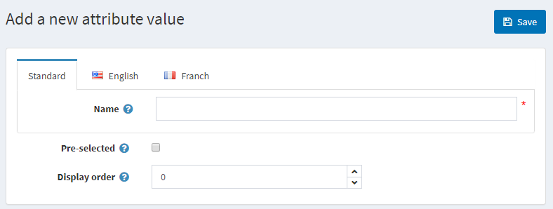
In the Add a new attribute value window, define the following information:
- Name — the attribute value name.
- Select the Pre-selected checkbox to indicate the attribute value is preselected for a customer.
- Display order — display order number of the attribute value.
You can edit and remove attribute values by clicking the corresponding buttons beside the attribute values in the Values panel.
Click Save. The new attribute will be displayed in the Edit vendor details page.